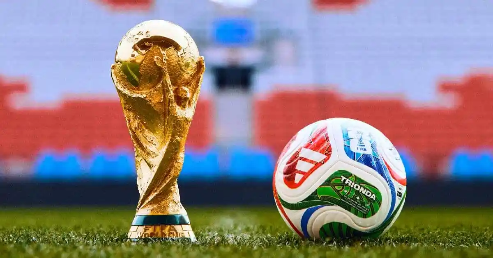

La edición más grande e innovadora en la historia del fútbol
El Mundial de Fútbol 2026 será la vigésima tercera edición de la Copa Mundial organizada por la FIFA. Este torneo marcará un antes y un después en la historia del fútbol, ya que será el primero en contar con 48 selecciones participantes, ampliando significativamente la representación global.
Además, será el primer Mundial organizado por tres países: Estados Unidos, México y Canadá, lo que implica una logística sin precedentes. Este cambio busca hacer el torneo más inclusivo, permitiendo que más países tengan la oportunidad de competir en el evento deportivo más importante del mundo.
El Mundial no solo es un evento deportivo, sino también cultural, ya que reúne a millones de personas de diferentes países, promoviendo la diversidad, la pasión por el fútbol y la unión entre naciones.
El Mundial 2026 contará con 48 equipos divididos en grupos, lo que incrementa la cantidad de partidos y el tiempo total del torneo. Este cambio fue impulsado por la FIFA con el objetivo de hacer el torneo más global e inclusivo.
La FIFA decidió ampliar el número de equipos para permitir que más selecciones de diferentes continentes puedan participar, especialmente de África, Asia y América.
Estas selecciones suelen dominar el ranking mundial de la FIFA debido a su rendimiento constante en competiciones internacionales y la calidad de sus jugadores.
La Copa Mundial de la FIFA comenzó en 1930 en Uruguay, siendo el primer torneo internacional de fútbol organizado a gran escala. Desde entonces, se ha celebrado cada cuatro años (con algunas excepciones debido a guerras).
Brasil es el país más exitoso en la historia de los mundiales, con cinco títulos. Otros países destacados incluyen Alemania e Italia, con cuatro títulos cada uno.
A lo largo de la historia, el Mundial ha dejado momentos inolvidables, como el "Maracanazo" en 1950, la actuación de Pelé, y los goles legendarios de Diego Maradona.
Con el paso del tiempo, el torneo ha evolucionado en tecnología, organización y alcance global, convirtiéndose en el evento deportivo más visto del planeta.